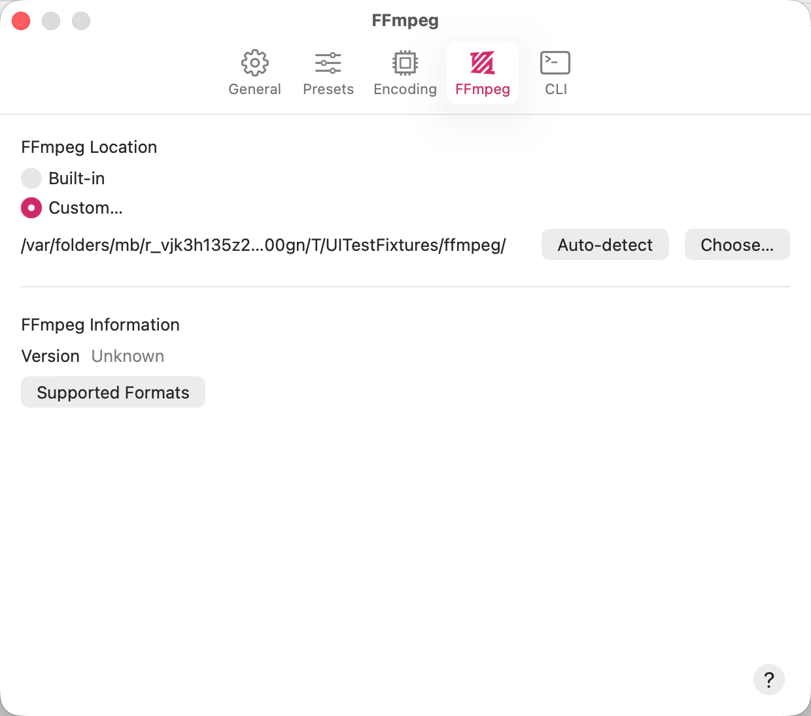

SubTrack hace su trabajo con FFmpeg, y la app incluye una versión firmada y autónoma. No usa nada de lo que hayas instalado tú y no hay nada que configurar. La mayoría de las personas no llegan a abrir este panel.
Hay dos motivos para venir aquí: ver qué versión estás usando o – en la versión descargable – usar una propia en su lugar.

SubTrack obtiene ese número ejecutando la versión que ha elegido, así que refleja con exactitud lo que se está ejecutando. Si en lugar de una versión aparece un aviso, no se ha podido ejecutar la versión de FFmpeg y nada de la cola se codificará hasta que lo soluciones.